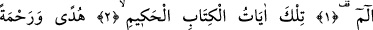
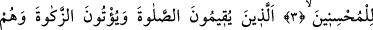
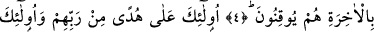
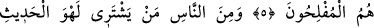
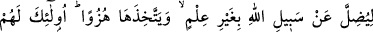
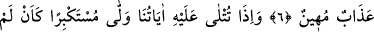
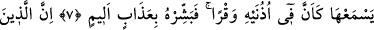
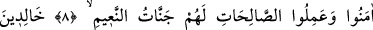
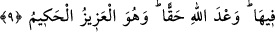

BOŞ LAFI SATIN ALANLAR
Rahmân ve Rahîm (olan) Allâh’ın adıyla.
1. Elif. Lâm. Mîm.
2. İşte bu âyetler, hikmet dolu Kitab’ın âyetleridir.
3. Güzel davrananlar için bir hidâyet rehberi ve rahmet olmak üzere
(indirilmiştir).
4. O kimseler, namazı kılarlar, zekâtı verirler; onlar âhirete de kesin olarak îman
ederler.
5. İşte onlar, Rableri tarafından gösterilmiş doğru yol üzeredirler ve onlar
kurtuluşa erenlerdir.
6. İnsanlardan öylesi var ki, herhangi bir ilmî delile dayanmadan Allah yolundan
saptırmak ve sonra da onunla alay etmek için boş lafı satın alır. İşte onlara rüsvay
edici bir azap vardır.
7. Ona âyetlerimiz okunduğu zaman, sanki bunları işitmemiş, sanki kulaklarında
ağırlık varmış gibi büyüklük taslayarak yüz çevirir. Sen de ona acıklı bir azabın
müjdesini ver!
8-9. Şüphesiz, îman edip de güzel davranışlarda bulunanlar için, içinde devamlı
kalacakları ve nîmetleri bol cennetler vardır. Bu, Allâh’ın verdiği gerçek sözdür.
O, mutlak güç ve hikmet sâhibidir.
“Elif. Lâm. Mîm.” Yâni “Bu, Elif. Lâm. Mîm sûresidir” demektir.